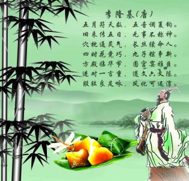
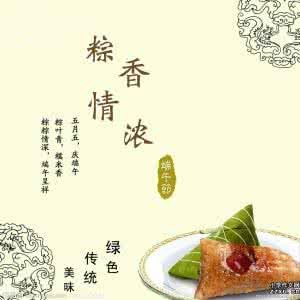
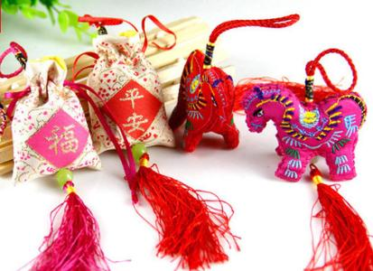
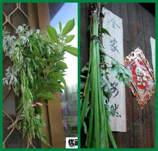

端午节的由来
据《史记》“屈原贾生列传”记载，屈原，是战国时期楚怀王的大臣。他倡导举贤授能，富国强兵，力主联齐抗秦，遭到贵族子兰等人的强烈反对，屈原遭馋去职，被赶出都城，流放到沅、湘流域...[详细]

习俗一：赛龙舟
赛龙舟，是端午节的主要习俗。相传起源于古时楚国人因舍不得贤臣屈原投江死去，许多人划船追赶拯救...
习俗二：端午食粽

端午节吃粽子，这是中国人民的又一传统习俗。粽子，又叫“角黍”、“筒粽”。其由来已久，花样繁多...
习俗三：佩香囊

端午节小孩佩香囊，传说有避邪驱瘟之意，实际是用于襟头点缀装饰。香囊内有朱砂、雄黄、香药，外包以丝布，清香四溢，再以五色丝线弦扣成索...
习俗四：悬艾叶菖蒲

民谚说：“清明插柳，端午插艾”。在端午节，人们把插艾和菖蒲作为重要内容之一。家家都洒扫庭除，以菖蒲、艾条插于门眉，悬于堂中...